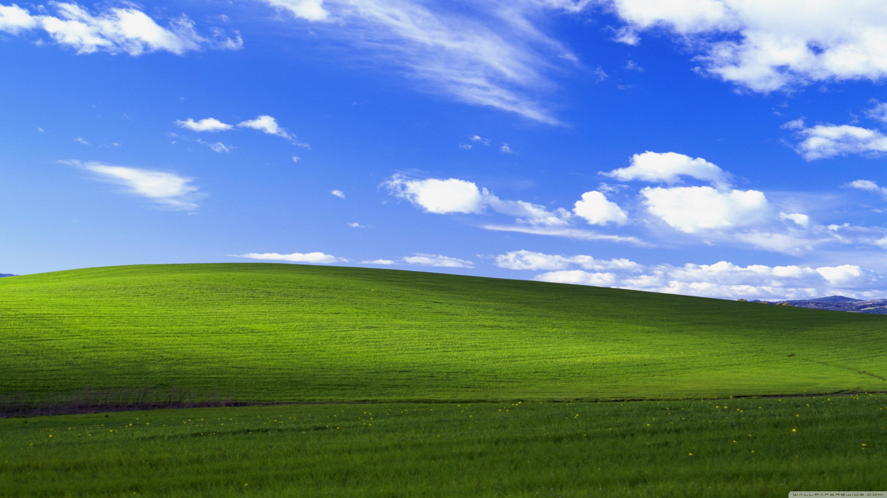

Lessons Learned from a Game Jam
Last month I participated in a 48-hour game jam for the first time. Going in, I thought the hardest part would be the coding. Turns out, it was everything else — scoping, decision-making under pressure, and knowing when to stop polishing.
Scope Is Everything
The biggest mistake I made was starting with a concept that was too ambitious. I had this grand idea for a procedurally generated dungeon crawler with multiple enemy types and a crafting system. By hour 12, I had a half-working room generator and nothing else.

I ended up scrapping most of it and rebuilding around a single mechanic: a top-down game where you dodge projectiles that bounce off walls. Simple, but it actually worked as a game.
Tools You Know Beat Tools You Want
I almost spent the first few hours setting up a new engine I'd been wanting to try. Glad I didn't — sticking with Unity meant I could focus on the game instead of fighting the tool. A jam is not the time to learn something new.
Ship something small that works over something big that doesn't.
The Last Two Hours
I spent the final stretch on juice — screen shake, particle effects, a simple sound effect for collisions. It made a huge difference. The game went from feeling like a prototype to feeling like a game. If I'd spent that time on a second level instead, it would have been worse overall.
Next time, I'm starting with a one-sentence pitch and sticking to it. No feature creep, no second-guessing the core mechanic at hour 20. Build the smallest version that's fun, then polish.